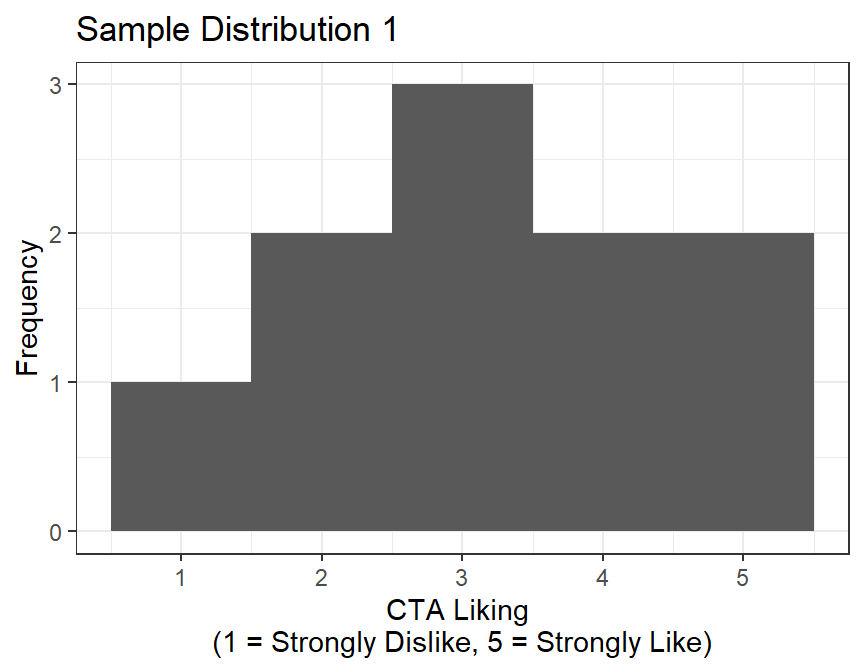
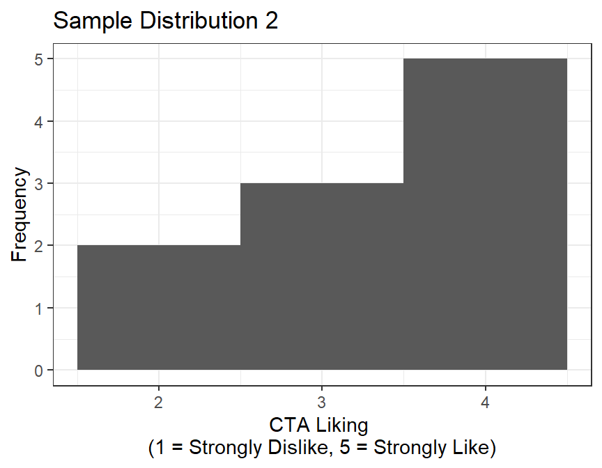
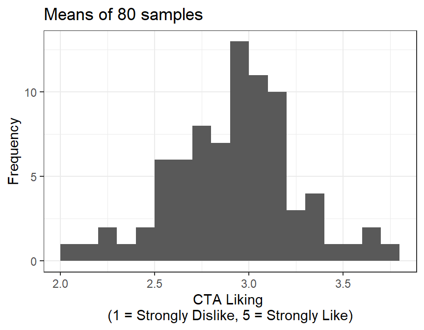
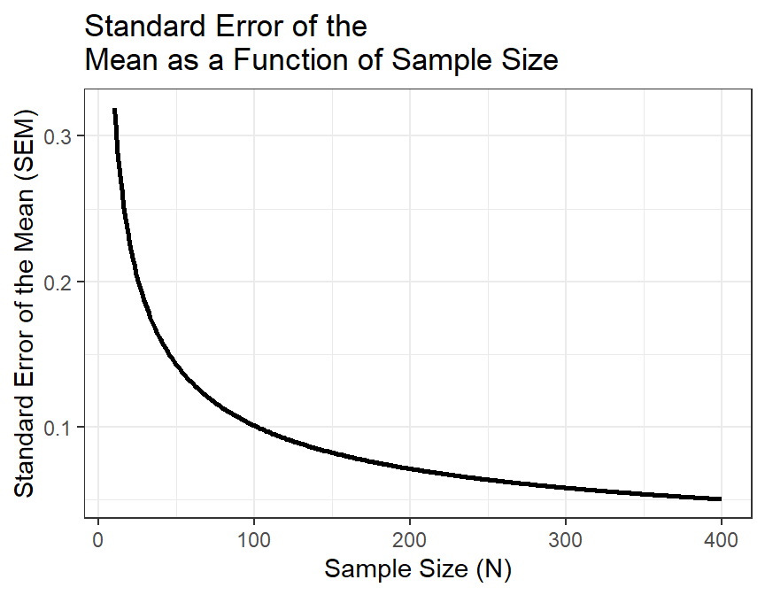
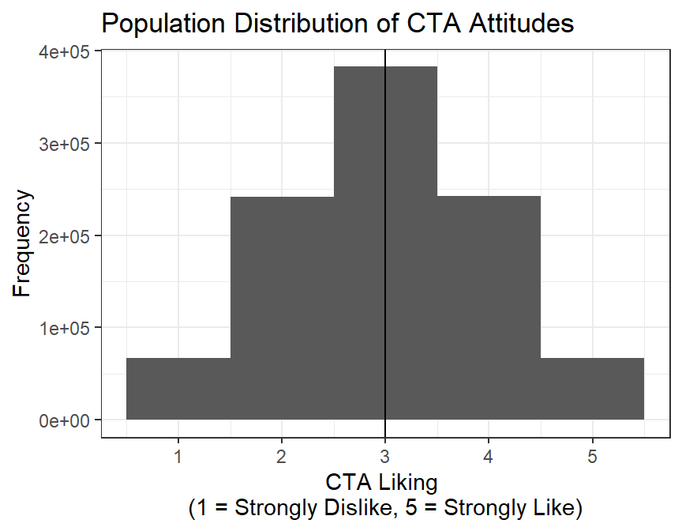
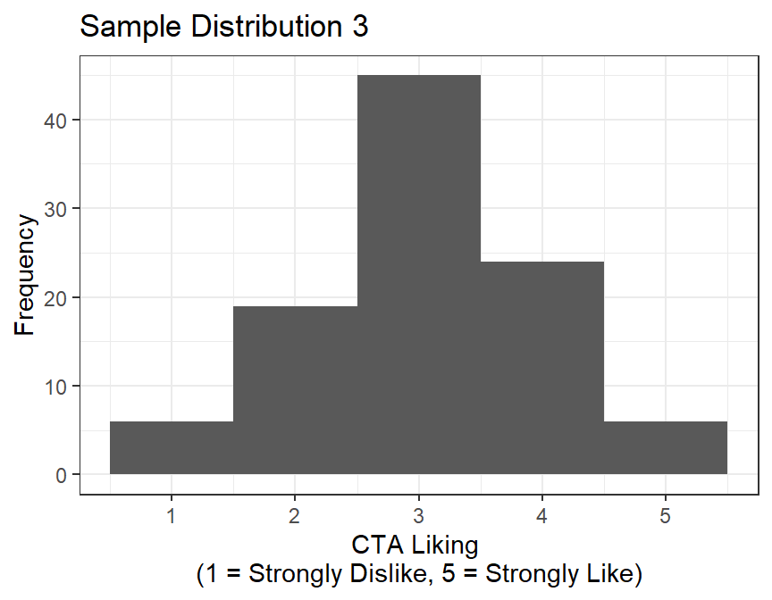
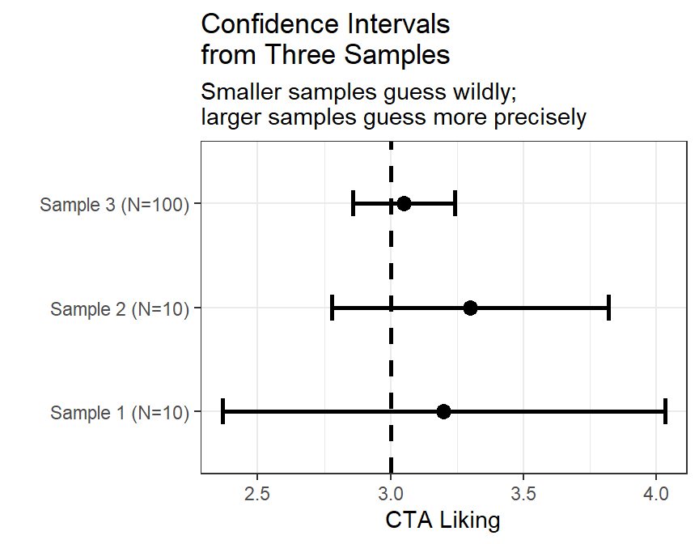

set.seed(42)
Npop <- 1e6
# Draw a million opinions from a normal distribution centered on 3.
CTA.Population <- rnorm(Npop, mean = 3, sd = 1)
# rnorm gives decimals like 3.47, but nobody circles 3.47 on a survey.
# round() snaps every score to the nearest whole number.
CTA.Population <- round(CTA.Population)
# The scale only goes 1 to 5, but rnorm does not know that and will hand
# us the occasional 0 or 6. These two lines find every score below 1 and
# set it to 1, then every score above 5 and set it to 5.
# Read it as: "of all the scores, the ones that are too small become 1."
CTA.Population[CTA.Population < 1] <- 1
CTA.Population[CTA.Population > 5] <- 55 Standard Error
5.1 Sampling Error and the Limits of Samples
Samples are guesses. Your sample mean will almost never equal the true population mean—and that is fine, as long as you know how unstable the guess might be.
Probability is fickle. With a tiny sample, the Probability Gods may hand you ten unusually delighted commuters or ten people whose train just vanished from the tracker. A larger random sample gives chance fewer opportunities to build your entire conclusion out of one weird subway car.
Suppose we randomly select 10 riders from a CTA subway car and ask:
How much do you typically like traveling on the CTA?
- 1 = Strongly dislike
- 2 = Dislike
- 3 = Neither dislike nor like
- 4 = Like
- 5 = Strongly like
Who we grab matters—daily commuters, tourists, and people who just missed their train all give different answers. The gap between our sample estimate and the true population value is called sampling error. It’s not a mistake, it’s just an unavoidable consequence of observing only part of the population.
The question is: how bad is the error, and how can we estimate it from a single sample?
5.1.1 Traveling on the CTA in the Lap of Luxury
The CTA hires me to do a satisfaction survey on the subway. So I take my question, and I want to find out what the population attitude toward the CTA is.
Well, the CTA handles about 1 million riders a day, but (a) they did not pay me enough to hire all the people I would need to ask all those people, and (b) I do not want to talk to random strangers on the Chicago subway about the CTA. They might punch me in the face as an answer to my question.
So I am hoping that 10 people is enough to answer their question and also lets me run this study cheaply so I can pocket all the money. Have you seen how much groceries cost nowadays?
5.1.2 Randomly Sample from the Population, Which Is Harder Than It Sounds
First I need R to build me a city cause I want to simulate this process, not actually interact with the “commoners”. Here our simulation generates all one million riders and their opinions, rounded onto the 1–5 scale. In a real study you never get to see this, which is why the rest of the chapter exists.
I enter a random subway car, at a random time, and randomly select 10 people and ask them to answer the question.
set.seed(1) # makes the "random" draw repeatable, so you get my numbers
SampleSize <- 10
# sample() reaches into the population and pulls out 10 riders at random.
# replace = FALSE means we cannot survey the same person twice.
sample.1 <- sample(CTA.Population, SampleSize, replace = FALSE)
M.1 <- mean(sample.1) # this sample's mean
SD.1 <- sd(sample.1) # this sample's standard deviation
The mean of this sample is \(M =\) 3.2.
Okay, so is that the true population mean? Have I sacrificed enough undergrads to the Probability Gods to get it perfectly right? Probably not, since they always demand more. Ugh, I should probably double check. So I head out again to a new random subway car, at a random time, and randomly select 10 new people and ask them to answer the question. Let’s hope no one punches me…
Same code. New seed, new subway car.
set.seed(26) # a different seed, so a different 10 riders
SampleSize <- 10
sample.2 <- sample(CTA.Population, SampleSize, replace = FALSE)
M.2 <- mean(sample.2)
SD.2 <- sd(sample.2)
The new mean of this sample is \(M =\) 3.3.
What the heck?! The mean is higher now. Which sample (1 or 2) is correct? Grrrr…
5.1.3 Brute force solution?
Hmm, I am not sure. So to solve my problem, I will do what all good professors do: use coerced undergraduate labor! So I send all undergraduates in my class out to each randomly sample 10 people on different days, at different times, and on different subway lines, and collect the data. We will call it homework…yeah homework…
Three lines of R replace 80 undergraduates.
set.seed(616)
NumberofSamples <- 80
SampleSize <- 10
# replicate() runs the same line over and over. Here it runs the sampling
# 80 times, once per undergraduate, and stacks the results into a table
# with one column per sample.
Sample.Results <- replicate(NumberofSamples,
sample(CTA.Population,
size = SampleSize,
replace = FALSE))
# apply() runs a function down each row (1) or each column (2) of that table.
# We want the mean of each sample, and samples are columns, so we use 2.
Sample.Means <- apply(Sample.Results, 2, mean)
You will notice the distribution of means is normal-ish and centered around 3, and it was precisely: Mean of means = 2.97. Remember, you would never know the true population mean. Good luck getting every rider of the CTA to answer a survey, and the Probability Gods only love me anyway, cause you have not spent your career tricking undergrads into a volcano.
5.1.4 SD of Distribution of Means
But you can also see that there is a wide range of sample means in that figure. So what does that mean?
Can I trust any individual sample to tell me the true population value? Like a stranger with candy, we need to trust but verify, so ask your mother about the van before you get in it, or about any strange sample you meet in the park.
Recall what a standard deviation (SD) represents: the typical distance that observations fall from their mean.
For a single sample, SD tells us how much individual observations vary around the sample mean.
But now we’re doing something slightly different.
Just like we had a standard deviation (S) around a sample mean, we can also calculate the standard deviation of the sample means themselves, that is, how much the means vary from sample to sample.
For a single sample, SD is:
\[S = \sqrt{\frac{\Sigma (X-M)^2}{N-1}}\]
Here \(N\) is the number of people in the sample: 10.
For the distribution of means, we look at how each sample mean differs from the grand mean (mean of means):
\[S_M = \sqrt{\frac{\Sigma (M-M_{Grand})^2}{N_{samples}-1}}\]
Here \(N_{samples}\) is the number of samples: 80 of them, one per undergraduate. It is not the 10 people inside each sample.
NoteTwo Different Counts Are Hiding in This Example
Our simulation contains:
- 10 people per sample, which determines how stable each sample mean is.
- 80 repeated samples, which lets us see the sampling distribution.
In a real study, we usually collect only one sample. We cannot directly observe its entire sampling distribution, so we estimate the standard error with \(S/\sqrt{N}\)—and that \(N\) is back to being the 10 people.
This quantity is the standard error (SE). Conceptually, it tells us: how much we expect a sample mean to vary simply due to random sampling.
ImportantSD and SE Describe Different Crowds
The standard deviation describes how individual scores vary around their sample mean.
The standard error describes how sample means would vary across repeated samples.
- SD asks: How different are the people?
- SE asks: How unstable is our estimate of the population mean?
Same units. Different crowd. Confusing them will anger the God Dorkaos.
We already have the 80 means sitting in Sample.Means, so the standard error is one function call:
# Note what these are running on: Sample.Means, the 80 means themselves.
M.S <- mean(Sample.Means) # the grand mean, a mean OF means
SD.S <- sd(Sample.Means) # the standard error, an SD OF meansThe grand mean \(M_G\) = 2.97
Standard error (spread of the sample means) = 0.34
Just like \(\pm2\) SD captures about 95% of individual observations in a roughly normal distribution, \(\pm2\) SE captures about 95% of the sample means in the sampling distribution.
In other words, if we repeatedly sample from this population, about 95% of the sample means should fall within two standard errors of the grand mean.
Thus, the population mean is hopefully between: 2.3 and 3.64. Note I am being loose here and we will come back to this.
(Assuming random sampling and a roughly normal sampling distribution—both of which we’re getting for free here.)
WarningTwo Is a Shortcut for Now; We Return to It Next Chapter
Using \(M \pm 2SE\) gives a rough 95% interval when the sampling distribution is approximately normal.
For small samples, the proper confidence interval uses a value from the t-distribution:
\[ M \pm t^*SE \]
For example, with \(N=10\), the 95% multiplier is about 2.26—not exactly 2. We will learn where that number comes from in the t-test chapter. For now, \(\pm2SE\) is a useful approximation. But hold your Guinness Beers. That is dramatic foreshadowing, and yes, English teachers, I did learn something.
5.1.5 The Standard Error of the Mean (SEM), the One Number to Rule Them All
The Dean found out about my use of forced student labor for my personal consulting gig. Apparently it’s unethical, and I owe the university 60% for “overhead” (yes, seriously, they take 60% of grant money). The Dean told me to solve my problem another way or fork it over.
Since I still have student loans to pay (sadly), what if we just make some assumptions about the world and estimate our sampling error from one sample? Because, again, I am lazy, my mother said the van checked out, and of course I would like to keep all the money for myself.
The strange thing was that the distribution of the means from all those samples looked normal-ish. After a little digging in some old, dusty textbooks, I learned that what I was seeing was not a fluke. In fact, it’s a well-known property of repeated sampling called the Central Limit Theorem.
Central Limit Theorem (CLT): If you repeatedly take random samples from a population, the distribution of the sample means will be approximately normal, centered on the population mean, even if the original population is not normal, as long as the sample size is reasonably large.
TipThe Raw Data Do Not Become Normal
The Central Limit Theorem applies to the distribution of sample means. It does not promise that the individual scores—or the population they came from—will become normal.
The individual commuters remain weird. Their means become better behaved.
Because of this, we can assume that if I took repeated samples, the means would be normally distributed around the population mean, and that the amount of error depends on the sample size.
That makes intuitive sense. If I sampled 100 people per sample, there would be less random error per sample. If I only sampled 10 people, there’s a much better chance my estimate would be way off.
According to this dusty old textbook, we can approximate the standard error of the mean using:
\[S_M = \frac{S}{\sqrt{N}}\]
So, if our first sample has a standard deviation of \(S\) = 1.32 then our estimated standard error of the mean is:
\(S_M\) = 0.42
This value is not too far off from the value I estimated earlier by sending out 80 undergraduates to repeatedly run the study: SE from the “actual” sampling distribution = 0.34.
In other words: the math mostly agrees with the coerced labor. Now I can pay my loans and buy a convertible Porsche like other middle-aged men and look ridiculous.
5.1.6 Effect of Sample Size
Okay, so what would have happened if I ran my coerced labor study with different sample sizes?
Instead of sending out more undergrads (ugh, mean Dean), I can just use math.
Recall:
\[S_M = \frac{S}{\sqrt{N}}\]
So as \(N\) increases, the SEM must decrease and it does so nonlinearly.
Let’s compute the SEM (\(S_M\)) for sample sizes from 10 to 400 people per sample and visualize it.
# Population SD
pop_sd <- sd(CTA.Population)
# Every sample size from 10 to 400. The colon makes a sequence: 10, 11, 12, ... 400.
N_vals <- 10:400
# A data frame is R's spreadsheet: each argument becomes a column, and
# the columns line up row by row. Here row 1 holds N = 10 and its SEM,
# row 2 holds N = 11 and its SEM, and so on down to 400.
sem_df <- data.frame(
N = N_vals,
SEM = pop_sd / sqrt(N_vals) # the SEM formula, applied to all 391 values at once
)
# Plot
ggplot(sem_df, aes(x = N, y = SEM)) +
geom_line(linewidth = 1) +
labs(
title = "Standard Error of the \nMean as a Function of Sample Size",
x = "Sample Size (N)",
y = "Standard Error of the Mean (SEM)"
) +
theme_bw()
So look at that, my error drops really close to zero pretty quickly. Past about 400 the curve is basically crawling: going all the way out to 10,000 riders buys me a standard error of 0.01 instead of 0.05.
So how many people would I need for this study?
In short, there are diminishing returns.
- When the sample size is small, the error is large and unstable.
- As the sample size gets very large, the error continues to shrink—but only a little at a time.
WarningA Larger Sample Can Produce Very Precise Nonsense
Increasing \(N\) reduces random sampling error. It does not repair:
- biased sampling;
- bad measurements;
- confounds;
- dishonest responses; or
- collecting every participant from the same suspicious subway car.
A large biased sample can estimate the wrong value with extraordinary precision.
In short: A sample is just a guess about the population. How good that guess is depends on how variable the population is to begin with. If the distribution is tight, you can get away with a smaller sample. If it’s spread out, you need a lot more people to pin it down.
You never actually know if your guess is right, which is why replication exists and why we all lose sleep. If you rerun the study and the first two moments (the mean and the variance) keep bouncing around, that’s your data politely telling you: get more people. This is the ball from the probability chapter, and the standard error is our estimate of how far it bounces.
Statistics doesn’t give you truth, but you can make increasingly expensive guesses.
5.1.7 What Was the Truth?
I told you in the last chapter that truth is a river. In reality that means you will never actually know the true population value unless you are either
- an all-knowing God, or
- good friends with said God.
Luckily, if you properly appease Dorkaos, the Ancient Greek God of Statistics, knower of all true distributions, with sufficient sacrifices, you may briefly glimpse the truth. Below, all is revealed to you, the future acolyte:

The true mean of this population distribution is \(\mu =\) 3.
Note: Most people are not on speaking terms with Dorkaos, so in real life you would never truly know this value.
So the real question is: How close did we come with our original samples?
From sample 1
- \(N = 10\),
- \(M_{Sample 1} =\) 3.2,
- \(S_{Sample 1} =\) 1.32,
- \(S_M\) = 0.42,
- So our 95% confidence guess (i.e., \(\pm2\) SE) would be 2.37 to 4.03
From sample 2
- \(N = 10\),
- \(M_{Sample 2} =\) 3.3,
- \(S_{Sample 2} =\) 0.82,
- \(S_M\) = 0.26,
- So our 95% confidence guess (i.e., \(\pm2\) SE) would be 2.78 to 3.82
Importantly, both intervals include the true population mean. That doesn’t mean we were brilliant; it means the intervals were wide. How do we shrink them?
5.1.8 What If We Sampled More People?
What if we ran a third sample with 100 people?
set.seed(26)
SampleSize <- 100
sample.3 <- sample(CTA.Population, SampleSize, replace = FALSE)
M3 <- mean(sample.3)
SD3 <- sd(sample.3)
SEM3 <- SD3 / sqrt(SampleSize)
Remember: \(S_M = \frac{S}{\sqrt{N}}\)
Sample 3:
- \(N = 100\),
- \(M_{Sample 3} =\) 3.05,
- \(S_{Sample 3} =\) 0.96,
- \(S_M = \frac{0.96}{\sqrt{100}}\) = 0.1.
Our 95% confidence guess is now: 2.86 and 3.24
And now you can see the key difference: the interval is much narrower.
5.1.9 Final Report (to the CTA)
So, at last, I can report that the average Chicagoan is roughly neutral toward the CTA, with a true rating that likely falls somewhere between: 2.86 and 3.24.
Still just a guess, but now a much better one as you can see below:

5.1.10 What do we do with this?
Pay loans, buy groceries, get the Porsche if there is money left over?
Yes, but also all of this stuff (SDs, SEs, sampling distributions, confidence intervals) exists for one reason: to let us draw inferences about a population using imperfect data.
We rarely get to see the truth. Instead, we:
- take a sample,
- quantify how uncertain that sample is, and
- ask whether what we observed is plausibly just random noise or something more interesting.
ImportantWhat a 95% Confidence Interval Means
Across many repeated samples, a correctly constructed 95% confidence-interval procedure captures the true population value about 95% of the time, assuming the model is appropriate.
After we calculate one interval, we do not say there is a 95% probability that the fixed population value is inside it. The procedure has 95% long-run coverage. The parameter is not wandering around trying to escape.
WarningThis Misinterpretation Is Extremely Common
Hoekstra and colleagues gave six incorrect statements about confidence intervals to 442 first-year students, 34 master’s students, and 118 researchers (Hoekstra et al. 2014). Only 2% of the first-year students, none of the master’s students, and 3% of the researchers correctly rejected all six statements.
Training and research experience did not protect people very well. Therefore, stop and read the definition above again. A confidence interval describes the long-run performance of a procedure. It is not the probability that this one completed interval contains the fixed parameter, the probability that the null hypothesis is true, or the range that contains 95% of individual scores.
But sometimes we want to ask a sharper question: Is this sample consistent with a specific claim about the population?
That question is exactly what t-tests are designed to answer.
5.1.11 The Short Story
- The standard deviation describes variation among observations.
- The standard error describes variation in an estimate across hypothetical samples.
- Increasing sample size usually makes the standard error smaller at a rate of \(1/\sqrt{n}\).
- Larger samples make estimates more stable; they do not purify biased samples with statistical holy water.
- Confidence intervals show uncertainty in the estimate, not a force field around truth.
Hoekstra, Rink, Richard D. Morey, Jeffrey N. Rouder, and Eric-Jan Wagenmakers. 2014. “Robust Misinterpretation of Confidence Intervals.” Psychonomic Bulletin & Review 21 (5): 1157–64. https://doi.org/10.3758/s13423-013-0572-3.